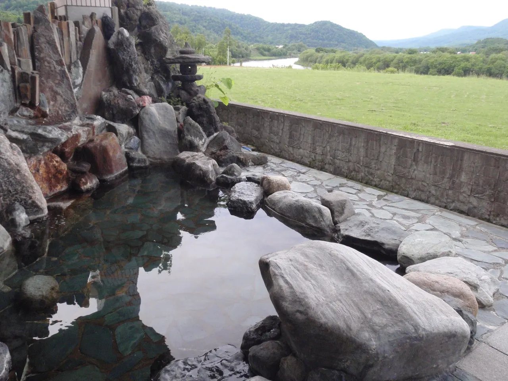
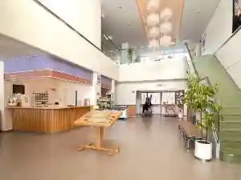
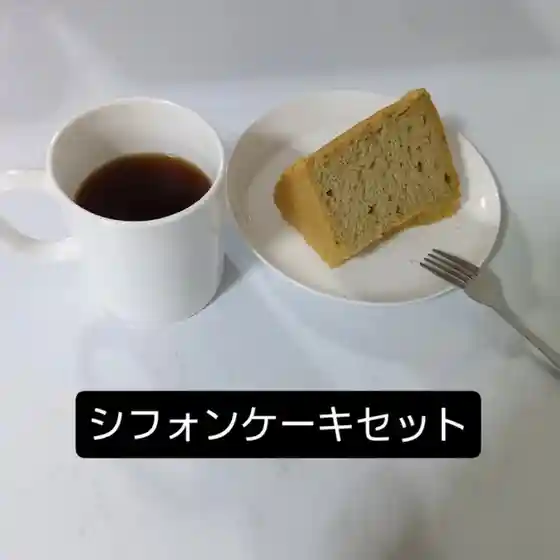
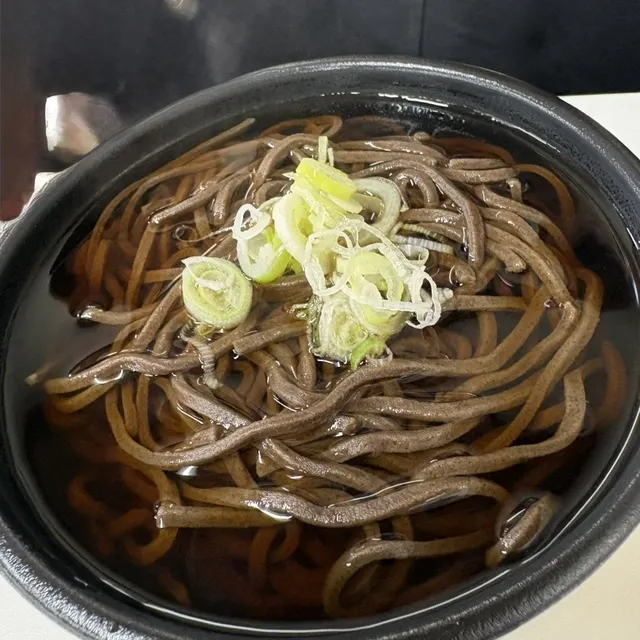
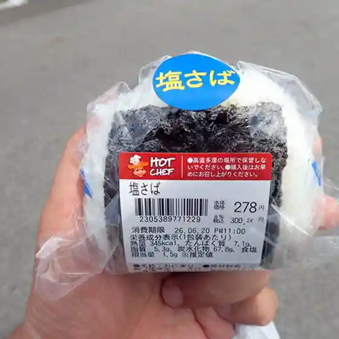
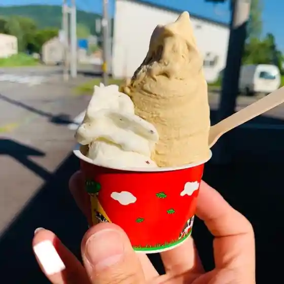
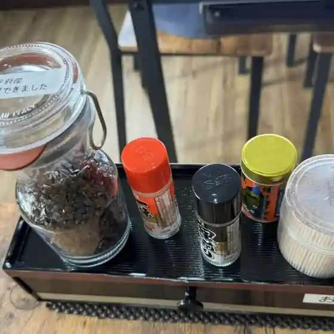
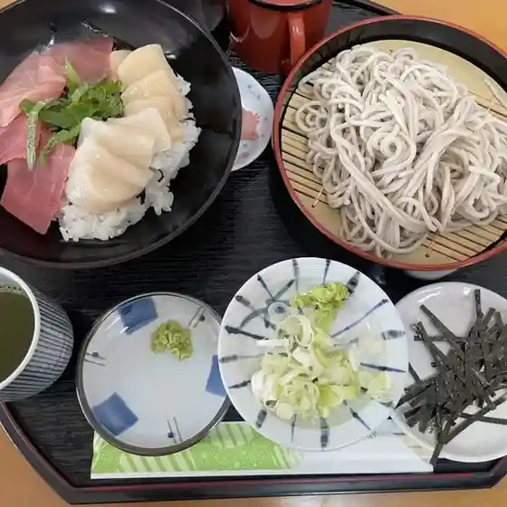

Otoineppu
Otoineppu · Hokkaido
Otoineppu
Highlighted on the Hokkaido map.

Stay
天塩川温泉

Teshio Kawa Onsen
Dining
cafe 咲来

Cafe Saki Rai
駅そば音威子府

Eki Soba Otoineppu
音威子府珈琲店

Otoineppu Koohii Mise
セイコーマート 音威子府店

Seikoomaato Otoineppu Mise
Gelateria the GreenGrass

Gelateria The Greengrass
カラオケスナック イケレ

Karaokesunakku Ikere
めしや 満福イケレ

Meshiya Manpuku Ikere
咲来

Saki Rai
ゲストハウスイケレ音威子府
Gesutohausuikere Otoineppu
居酒屋 潤ちゃん
Izakaya Jun Chan
ecoおといねっぷ
Eco Otoineppu
Cafe あすはれ
Cafe Asuhare
天塩川温泉
Teshio Kawa Onsen
いないいないばぁー
Inaiinaibaaa